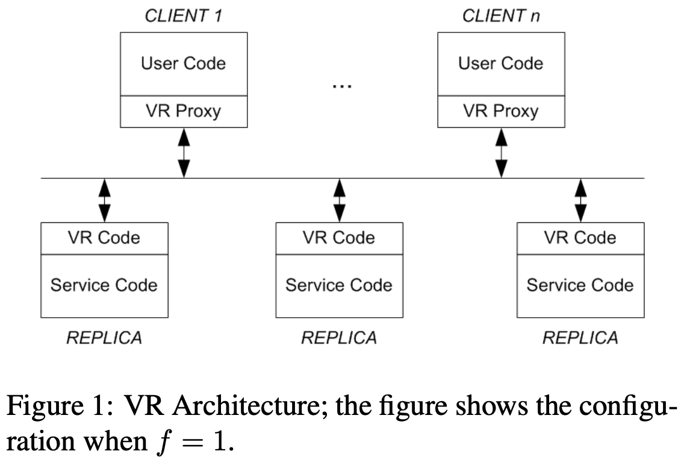
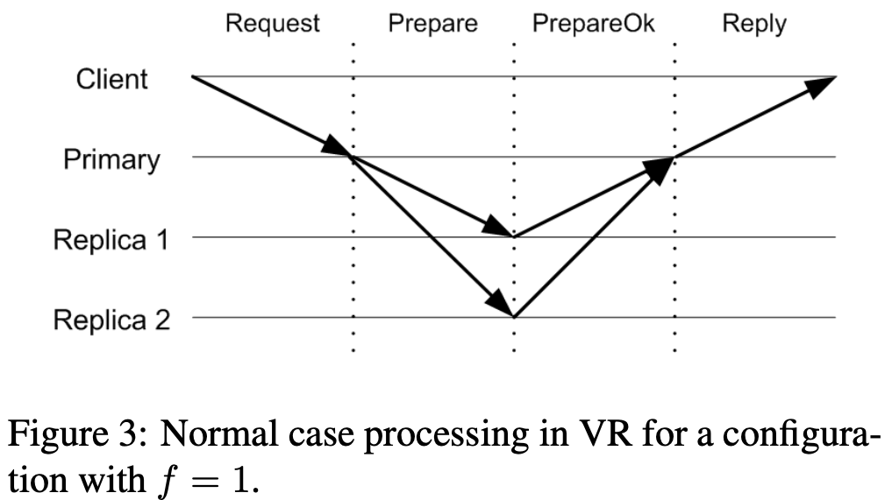

참고한 것들
원본 논문
- 이 글은 Viewstamped Replication Revisited, MIT CSAIL Tech Report 에서 핵심 아이디어만 요약한 글입니다.
- 별도의 명시가 없으면, 본 논문에서 그림을 가져왔습니다.
VR
- Viewstamped Replication Protocol (VR) 은 여러 node 들이 동일한 operation 을 처리하여 고가용 서비스를 제공하게 할 때 사용되는 프로토콜이다.
- 기본적인 특징은:
- Replication protocol 인데, consensus 도 제공한다.
- Disk IO 를 필요로 하지 않는다; Disk IO 없이도 충분히 작동하고, disk IO 는 그냥 “persistency” 를 위해서만 사용된다.
- Crash failure 에 대해서만 대응한다.
- Internet 과 같은 asynchronous network 에서 작동하도록 고안되어 있다; 즉, 메세지가 전달되지 않거나, 순서가 바뀌거나, 중복해서 전달되는 상황에서도 대비가 되어 있다.
- 그럼 이제 VR 에서 어떻게 operation 을 처리하는지, replica failure 시에는 어떻게 처리되는지, 그 fail 된 replica 는 어떻게 다시 복구되는지 살펴보자.
Basic terminology
Architecture
- 일단 VR 에서는 흔한 Quorum requirement 를 사용한다.
- 즉, 총 replica count 가 일때, quorum 은 이 되고, 이때 만큼의 fault-tolerance 를 가진다.
- 그리고 보통 아래와 같은 구조로 운영된다.

- 일단 VR 은 user code (client application) 와 service code (server application) 사이에 위치하여 둘 간에 중재를 하게 되는데
- VR Proxy 는 user code 으로부터 요청을 받아 replica 에게 쏴주고, 응답을 받아 다시 user code 에게 전달하는 매개체 역할을 한다.
- VR Code 는 VR Proxy 가 보낸 request 를 받아 다른 replica 의 VR Code 에게 뿌려 해당 request 가 replication 될 수 있게 한다.
- 그리고 VR Code 는 request 를 같은 node 의 service code 에게 보내 처리되게 한 후, 그 결과를 VR Proxy 에게 보낸다.
Primary, Secondary, View
- 일단 여기서 지켜져야 할 가장 핵심은 “모든 replica 에서 처리되는 request 의 순서는 동일해야 한다” 는 것이다.
- 어찌보면 당연한 것이다. 하나의 service 가 받는 request 순서는 고정되어있기 때문에, 이것을 replication 하고자 할 때도 각 구성요소인 replica 는 동일한 순서로 해당 request 를 처리해야 한다.
- 여기에서 Primary 와 Secondary 가 나뉜다. 이들은 둘 다 replica 가 수행할 “role” 의 이름인데,
- Primary 는 이 “순서를 정하는” 역할을 한다.
- 그리고 Secondary 는 Primary 가 정한 순서를 그대로 따라 실행하는 역할을 한다.
- 근데 당연히 Primary 역할의 replica 도 fail 할 수 있다. 이때 하나의 replica 가 Primary 의 역할을 하는 기간을 View 라고 한다.
- 따라서 system 전체는 시간순으로는 연속적인 view 들을 거치며 실행된다고 할 수 있고,
- Primary 가 죽어서 새로운 replica 가 Primary 를 맡게 되는 일련의 과정을 View-change Procedure 라고 한다.
State
주의
- 여기서 request 에 붙는 숫자가 두 종류가 있는데, 이 둘은 같지 않을 수 있다.
- Op number 는 replica 가 수신한 request 에 붙는 숫자이고,
- Client request number 는 client 가 송신한 request 에 붙이는 숫자이다.
- 각 replica (VR Code) 들은 일련의 “상태 (state)” 를 bookkeeping 해둔다.
- Configuration: 이것은 모든 replica 의 IP 주소를 정렬한 배열이다.
- Replica number: 이것은 해당 replica 를 고유하게 식별해주는 숫자로, 본인에 대한 Configuration 에서의 index 값이다.
- View number: 이것은 0 부터 시작해 view change 마다 꾸준하게 1씩 증가하는 값이다.
- Status: 이것은 현재 replica 의 상태로, Normal, View-change, Recovering 세 상태 중 하나의 값을 가진다.
- Op number: 이것은 0 부터 시작해 request 를 받을 때마다 1씩 증가하는 값으로, 현재 replica 가 받은 가장 최신의 request 를 나타낸다.
- Log: 이것은 replica 가 받은 request 들이 저장되는 배열로, Op number 순서대로 저장된다.
- Commit number: 이것은 가장 최근에 본 replica 가 commit 한 (즉, 실행을 완료한) request 의 Op number 를 나타낸다.
- Client table: 이것은 replica 가 들고 있는 client 들에 대한 정보로, 각 client 당 가장 최근의 request 의 Client request number (뒤에 나옴) 와 만약에 그 request 가 commit 되었다면, 이에 대한 respond 도 저장한다.
- 여기서 확인할 점은 Primary 가 누구인지는 저장하지 않는다는 것이다. 이것은 단순하게 으로 계산된다.
- 이 점이 흥미로운 것은 Raft 처럼 별도의 leader election 작업을 하지는 않는다는 것이다.
- Leader 는 그냥 round-robin 으로 선출된다.
- 또한 client (VR Proxy) 도 일련의 정보를 저장해둔다.
- 일단 위 정보들 중에서는 Configuration 이랑 View number 를 가지고 있고
- 추가적으로 Client ID 와 1씩 증가하는 Client request number 가 있다.
- 이렇게 state 를 bookkeeping 하는 것을 State Machine 이라고 부르기도 한다.
Operation
Normal operation
- 우선 정상적인 상황에서 어떻게 작동하는지 보자.

- 우선 client 는 무조건 Primary 에게 요청을 보낸다.
- 이게 가능한 이유는 client 가 Configuration 과 View number 를 알고 있기 때문.
- 이때는 Client ID 와 Client request number 를 같이 보낸다.
- 그럼 Primary 는 Client table 을 보고 이 request 를 검증한다.
- 만약 Client table 을 봤을 때 Client request number 가 Client table 에 적힌 그것 보다 작다면, 이것을 기각한다.
- 만약에 Client table 에의 Client request number 와 같고 그것이 commit 되어서 respond 까지 Client table 에 저장되어 있다면, 그 respond 를 보낸다.
- 검증이 끝나면, 이것을 다른 replica 에게 뿌려주는 작업을 한다.
- 일단 Op number 를 증가시키고, Log 에 추가한다.
- 그리고 Client table 에 저장한 Client request number 도 업데이트 해준다.
- 마지막으로
PREPARE메세지를 다른 replica 에게 뿌리는데, 여기에는 Client 의 request 내용 이외에도 Primary 가 알고 있는 (1) View-number (2) Op number (3) Commit number 를 넣는다.
- Replica 는
PREPARE를 받은 뒤에 저 Primary 가 한 작업과 “유사” 한 짓을 한다.- 일단 Primary 의 Op number 가 기준이 된다. 즉, 이 받은 Op number 가 본인이 알고 있는 Op number 과 1 이 차이나지 않는다면 (Primary 가 Op number 를 증가시켰기 때문에 Secondary 는 이것보다 1 적은 값을 들고있어야 정상) Primary 로부터 state 를 받아오는 (state transfer) 등의 작업을 하여 이 새로운 operation 의 이전 operation 들이 모두 자신의 Log 에도 들어오게 한다.
- 그리고 Primary 가 보낸 Op number 로 자신의 Op number 를 설정하고, request 를 Log 에 넣으며, 본인의 Client table 에도 다 반영을 한 뒤에
PREPARE OK메세지를 Primary 에게 쏜다.
- 즉,
PREPARE OK라는 말은 해당 Op number 의 request 뿐 아니라 그 전까지의 애들도 전부 “적어도” Log 에는 다 들어갔다는 소리이다.
- Primary 는 개의
PREPARE OK를 기다린다. 이건 당연히 Primary 를 포함해 개의 quorum 을 맞추려면 Secondary 로부터 개의PREPARE OK를 받아야 하기 때문이다. - 그리고 Primary 는 Commit number 를 증가시키고, Service Code 에 upcall 을 날려 이것 (그리고 혹시나 이전의 request 들 중에 exec 되지 않은 것들 까지) 을 execute 하게 한 뒤, client 에게
REPLY를 보낸다.REPLY에는 upcall 의 결과 뿐 아니라, Primary 가 알고 있는 View number, Client request number 도 보낸다.
- Secondary 도 Primary 와 “유사”한 짓을 한다.
- 만약 operation 이 Log 에도 잘 저장되어 있고 이전의 operation 들이 모두 exec 된 상태라면, 이 operation 에 대해서도 Service Code 에 upcall 을 날려 execute 하게 한다.
- 또한 Commit number 하고 Client table 까지 다 업데이트해준다.
- 하지만 당연히
REPLY는 보내지 않는다. Primary 가 이미 보냈기 때문.
View change
- 일단 view change 가 필요하다는 것은 heartbeat message 를 통해 알아낸다.
- Primary 는 request 를 처리하며
PREPARE를 보낼 것이기에 이 메세지가 heartbeat 가 되며, - 만약에 request 가 없을 경우에는 Primary 는
COMMIT을 보내 heartbeat 처럼 사용한다. - 따라서 만일 이 두 메세지가 모두 일정 기간동안 오지 않는다면, Secondary 는 view change 를 시작하게 된다.
- Primary 는 request 를 처리하며
- 그래서 view change 는 다음과 같은 순서로 진행된다.
- 만약 어떤 놈이 timeout 이 나면, 그놈은 view number 를 증가시키고, 상태를 view change 로 바꾸며,
START VIEW CHANGE메세지를 뿌린다. - 이것을 받은 애들은 자신의 timer 를 체크해 진짜 timeout 이 났는지 확인하고, 만약에 진짜로 view change 를 해야한다면 동일하게 view number 를 증가시키고, 상태를 view change 로 바꾸며,
START VIEW CHANGE메세지를 뿌린다.- Timer 를 보거나 아니면 자신보다 view number 가 더 높은
START VIEW CHANGE혹은DO VIEW CHANGE(뒤에 나옴) 메세지를 받으면 이와 같은 작업을 할 수도 있다고 한다.
- Timer 를 보거나 아니면 자신보다 view number 가 더 높은
- 그럼
START VIEW CHANGE가 계속 reproduce 되며 퍼질텐데, 어떤 한 노드가 개의START VIEW CHANGE를 받게 되면, 그놈은 다음 view 의 Primary 에게DO VIEW CHANGE를 쏘게 된다.- 위에서도 말했다시피 VR 에서는 별다른 leader election 작업 없이 그냥 round robin 으로 leader 를 선정하기에, 특별한 작업 없이도 view change 시에 다음 leader 는 누가 될지 알 수 있게 해준다.
- 그리고 이
DO VIEW CHANGE에는 본인의 state 를 같이 실어 보낸다: Log, Op number, Commit number, 그리고 View number 등등.
- 다음 Primary 는 본인 제외 개의
DO VIEW CHANGE를 받게 되면 이 받은 정보를 가지고 이전의 Primary 의 state 를 복구한다.- 여기에서는 “가장 최신의 정보” 하나만 있으면 된다.
- 즉, 여러 Secondary 들이 보낸
DO VIEW CHANGE의 state 를 조합해 복구하는 것이 아닌, 가장 최신의 것이라고 판단되는 놈 하나의 state 로만 복구를 하게 된다. - “하나” 만 있으면 되기 때문에
DO VIEW CHANGE가 개만 있어도 (“본인 제외” 개 이기 때문에) 충분한 것이다.PREPARE OK를 개를 받았기 때문에, 저 개의DO VIEW CHANGE속에는 무조건 가장 최신의 정보가 들어있게 되기 때문.
- 복구한 뒤에는 Primary 는 본인의 view number 를 (
DO VIEW CHANGE에 들어있던) 다음 view 로 바꾸게 되고,STARTVIEW메세지를 쏴서 새로운 view 가 시작될 수 있게 한다.- 여기에는 새로운 Log, Commit number, Op number 등이 담긴다.
- Primary 는 아직 execute 하지 않은 애들을 전부 처리하고 순차적으로 client 에게
REPLY를 보낸다. - 그리고 이 시점부터 Primary 는 client 의 request 를 받을 수 있는 상태 (normal) 이 된다.
- Secondary 는
STARTVIEW를 받으면 다음의 작업을 하며 normal 상태로 돌아간다.- 해당 메세지에 들어있는 state 로 자신의 state 를 설정하고,
- Log 를 보고 모든 uncommitted operation 들에 대해
PREPARE OK를 보내 Primary 에서 이놈들에 대해 execute 할 수 있게 한다.
- 추가적으로, 여기에는 더욱 optimization 을 할 수 있는 구석이 있다고 한다.
- 가령 여기에 사용되는 메세지들의 숫자는 적지만, 각각의 데이터 사이즈는 크다.
- 뭐 Log 를 주고받고 하니까네
- 따라서 어차피 대부분의 Log 는 새로운 Primary 도 갖고 있을 것이기에, 최신의 Log 몇개만을 주고받고 혹시 부족하면 더 달라고 하는 등의 최적화도 가능하다.
- 가령 여기에 사용되는 메세지들의 숫자는 적지만, 각각의 데이터 사이즈는 크다.
Recovery
- Replica 는 fail 시에 적어도 해당 fail 시점까지는 복구해야 client request 를 처리하거나 view change 에 가담할 수 있다.
- 왜인지는 사실 잘 모르겠다.
- 이것을 복구하는 가장 간단한 방법은 storage 에다가 저장해 놓는 것이고 물론 이러한 방식을 사용하기는 하지만 너무 자주 IO 를 하는 것은 당연히 normal operation 을 느리게 할 것이다.
- 약간 극단적으로 생각해서 아무것도 storage 에 저장하지 않는 상황에서도 VR 은 복구가 가능하다; 왜냐면 “다른 replica” 들이 정보들을 갖고 있기 때문.
- 따라서 recovery protocol 은 다음과 같이 진행된다.
- 우선 되살아난 replica 는 본인의 상태를 Recovering 로 설정하고, 다른 replica 들에게
RECOVERY메세지를 보낸다.- 이
RECOVERY메세지에는 논스 (Nonce) 를 함께 보낸다. 이것은 간단하게 말하면 각 recovery 를 식별하게 해주는 장치로, 이전에 진행된 recovery protocol 과 구분지어 이전 recovery protocol 에서의 데이터로 복구되지 않게 하기 위함이다.
- 이
- 상태가 Normal 인 replica 들만이 이 메세지에 대해
RECOVERY RESPONSE메세지로 응답한다.- 여기에는 기본적으로 현재 view 의 view number 와 수신한 논스값이 들어있고,
- Primary 는 추가적으로 Log, Op number, Commit number 를 같이 보낸다.
- Recovery 가 진행중인 replica 는 Primary 의 것을 포함해 개의
RECOVERY RESPONSE를 받기를 기다린 후, 여기서의 정보들로 본인의 state 를 복구해 Normal 로 돌아온다.
Reconfiguration
- 일단 Reconfiguration 이라는 것은 새로운 node 가 추가되거나 삭제되어서 fault tolerant () 가 바뀔 때의 protocol 을 의미한다.
- 이때 각 기간을 epoch 이라고 부른다; 즉, Reconfiguration 이 진행되면 epoch 가 바뀌는 것.
- 그리고 epoch 간 전환되는 기간을 transition 이라고 부른다.
- 일단 client 가
RECONFIGURATIONrequest 를 보내고, 이것이 commit 되는 것으로서 작업이 시작된다.- 이 일련의 과정을 통해 client 의 request 를 처리할 책임이 old group 으로부터 new group 으로 이전되게 된다.
- 그리고 이 transition 기간동안에는 client request 를 받지 못하는 상태가 되고, 이번에도 개의 replica 의 state 가 최신화되면 그때부터 new group 으로서 client request 를 받을 수 있는 상태가 된다.
- 근데 이 down time 은 꽤 치명적일 수 있다: 그래서 Warming-up 방식을 사용하기도 한다고 한다.
- 이것은 old group 이 계속해서 client request 를 처리하는 동안 새로 추가된 node 들에 대해 state 최신화를 수행해 제대로 transition 이 시작되었을 때 금방 끝날 수 있게 하는 방법이다.